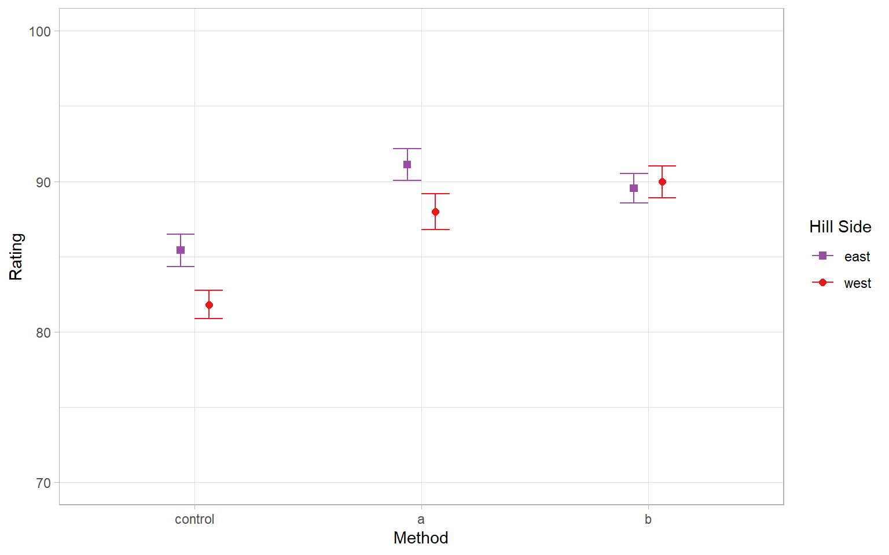
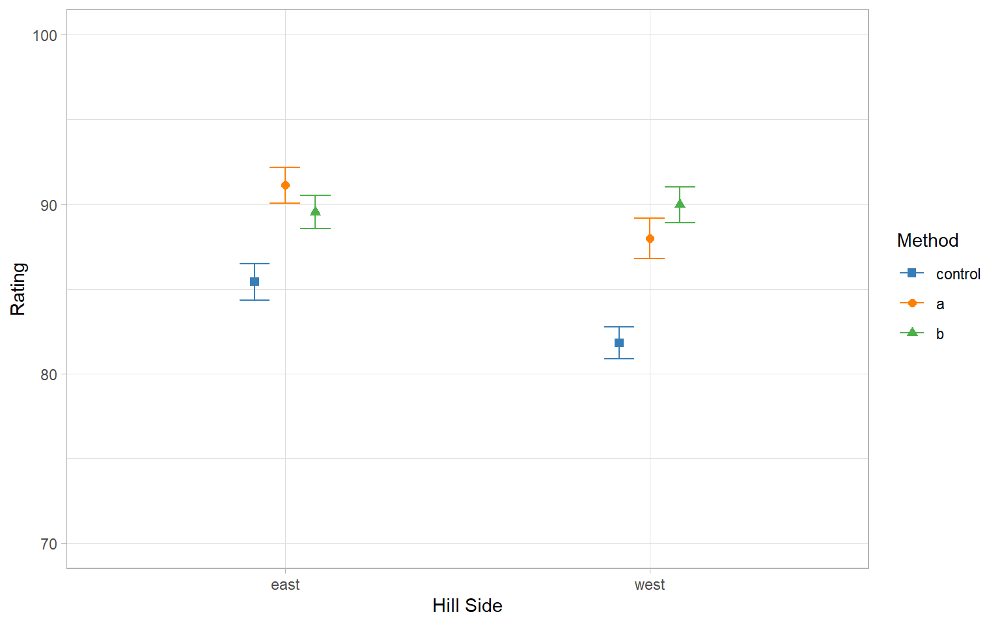

Main Effect 1 \(p\)
- \(MS_{\text{method}} = 433\), \(df_{\text{method}} = 2\) (from east only model)
- \(MS_{W} = 13.8\), \(df_W = 294\) (from full model)
On the East side, there were significant differences in method
Linear Model:
\[{\color{blue}y_i} = \beta_0 + \sum_{p=1}^P \beta_p {\color{red}x_{ip}} + \epsilon_i\]
Left side variable terms
Right side variable terms
| IV(s) | DV | IV Status | Model Structure |
|---|---|---|---|
| — | One categorical | — | \(\chi^2\) Goodness of Fit |
| One Categorical | One categorical | — | \(\chi^2\) Test of Independence |
| — | One Continuous | — | One Sample \(t\)-Test |
| One Binary | One Continuous | Dependent Groups | Paired Sample \(t\)-Test |
| One Binary | One Continuous | Independent Groups | Independent Sample \(t\)-Test |
| One Categorical | One Continuous | Independent Groups | One-Way ANOVA |
| More than One Categorical | One Continuous | Independent Groups | Factorial ANOVA |
| One Categorical | One Continuous | Dependent Groups | One-Way Repeated Measures ANOVA |
| More than One Categorical | One Continuous | Dependent Groups | Factorial Repeated Measures ANOVA |
| More than One Categorical | One Continuous | Mixed Groups | Mixed ANOVA |
| One Continuous | One Continuous | — | Correlation or Simple Regression |
| More than One Continuous | One Continuous | — | Multiple Regression |
For two-way ANOVA, there are two categorical IVs (factors)
Factor \(A\) has levels \(j = 1, \ldots, J\) and Factor \(B\) has levels \(k = 1, \ldots, K\)
Population model:
\[y_{ijk} = \mu_G + \alpha_j + \beta_k + (\alpha\beta)_{jk} + \epsilon_{ijk}\]
| Effect / Source | Sums of Squares | Degrees of Freedom | Mean Squares | \(F\) |
|---|---|---|---|---|
| Between-Gp Effect | \(SS_{G}=\sum_{k}\sum_{j}[n_{jk}(\bar{y}_{jk}-\bar{y})^{2}]\) | \(df_{G}=(J\times K-1)\) | \(MS_{G}=\frac{SS_{G}}{df_{G}}\) | |
| Main Effect \(A\) | \(SS_{A}=nK\sum_{j}(\bar{y}_{j}-\bar{y})^{2}\) | \(df_{A}=J-1\) | \(MS_{A}=\frac{SS_{A}}{df_{A}}\) | \(F(df_A, df_W) = \frac{MS_A}{MS_W}\) |
| Main Effect \(B\) | \(SS_{B}=nJ\sum_{k}(\bar{y}_{k}-\bar{y})^{2}\) | \(df_{B}=K-1\) | \(MS_{B}=\frac{SS_{B}}{df_{B}}\) | \(F(df_B, df_W) = \frac{MS_B}{MS_W}\) |
| Interaction Effect | \(SS_{AB}=SS_{G}-SS_{A}-SS_{B}\) | \(df_{AB}=(J-1)(K-1)\) | \(MS_{AB}=\frac{SS_{AB}}{df_{AB}}\) | \(F_{df_{AB}, df_W} = \frac{MS_{AB}}{MS_W}\) |
| Within-Gp Effect | \(SS_{W}=SS_{T}-SS_{G}\) | \(df_{W}=df_{T}-df_{G}\) | \(MS_{W}=\frac{SS_{W}}{df_{W}}\) | |
| Total Effect | \(SS_{T}=\sum_{k}\sum_{j}\sum_{i}(y_{ijk}-\bar{y})^{2}\) | \(df_{T}=N-1\) | \(MS_{T}=\frac{SS_{T}}{df_{T}}\) |
Like ommibus test in one-way ANOVA does not tell us how groups might differ, only whether there are differences in means and if those differences depend on one factor or both.
To investigate how groups differ, we need simple main effects
Simple Main Effects are a way of looking at how the effects of one factor differ for different levels of the other.
Suppose we want to run simple effects for main effect \(A\)
Step 1: Run a separate one-way ANOVA for each level of factor \(B\)
Step 2: Record the sums of squares, degrees of freedom, and mean squares of the main effect for each one-way ANOVA
Step 3: Use the mean squares within and \(df\) within from the original factorial ANOVA
Step 4: Hypothesis Testing (next slide)
\(H_0\): there is no simple main effect in the population
\(H_1\): there is a simple main effect in the population
Test statistic:
\[F(df_{\text{simple}}, df_W) = \frac{MS_{\text{simple}}}{MS_W}\]
When \(H_0\) is true, test statistic follows the \(F\) distribution with \(df_{\text{simple}}\) numerator and \(df_W\) degrees of freedom
(an actual vineyard I visited in Spain)
Way 1: Using built-in R commands
First redo model looking at the effect of method only for the east hill
But instead of ignoring the west hill, I use \(MS_W\) from the full ANOVA, rather than this one. Why?
On the East side, there were significant differences in method
Now I do the same for the west side of the hill
On the west side, there were also significant differences in method
The emmeans package includes a more straightforward way to conduct simple main effects:
(slight numerical differences due to rounding)
This plot (from last time) corresponds to this analysis
I could also look at the effect of hill by method if I prefer to make that interpretation
There were significant differences in the side of the hill for control and method a, but not method b.
Which would correspond to this plot

We can conduct multiple comparisons between pairs of groups of factor \(A\), separately in groups of factor \(B\)
Multiple comparisons are not necessary when there are only two levels of a factor
On both sides of hill, there is a statistically significant simple main effect of growing method. We can perform pairwise tests for each growing method by each side of the hill separately.
hill = east:
contrast estimate SE df t.ratio p.value
control - a -5.70 0.742 294 -7.683 <.0001
control - b -4.12 0.742 294 -5.554 <.0001
a - b 1.58 0.742 294 2.130 0.0856
hill = west:
contrast estimate SE df t.ratio p.value
control - a -6.16 0.742 294 -8.303 <.0001
control - b -8.16 0.742 294 -10.999 <.0001
a - b -2.00 0.742 294 -2.696 0.0202
P value adjustment: tukey method for comparing a family of 3 estimates This corresponds to pairwise \(t\)-tests for these comparisons

On th east side of the hill, using Tukey’s HSD for Type I error control:
control is significantly different from acontrol is significantly different from ba is not significantly different from bOn the west side of the hill
We can also do linear contrasts for simple main effects. For example, we can compare whether control is significantly different from the average of the two treatment conditions for each side of the hill separately.
What linear contrast would compare control to the average of a and b?
\(\psi = 1 (\text{control}) + -0.5 (\text{a}) + -0.5 (\text{b})\)
For both sides of the hill, control is significantly different from the average of a and b
If we assume that the interaction isn’t meaningful then we may want to look at the simple main effects
For example, let’s look at pairwise comparisons for the main effect of Method averaged over the effects of both sides of the hill
At the average of east and west hills
control is significantly different from acontrol is significantly different from ba and b are not significantly different from each otherStandardized associations:
Similar to calculations and interpretations for interaction and main effects
\(\eta^2\) for simple main effect
\[\frac{SS_{\text{simple}}}{SS_{T}}\]
\(\omega^2\) for simple main effect
\[\frac{df_{\text{simple}}(MS_{\text{simple }}-MS_{W})}{MS_{W}+SS_{T}}\]
Partial \(\eta^2\) for simple main effect
\[\frac{SS_{\text{simple}}}{SS_{\text{simple}}+SS_{W}}\]
Partial \(\omega^2\) for simple main effect
\[\frac{df_{\text{simple}}(MS_{\text{simple}}-MS_{W})}{SS_{\text{simple}}+(N-df_{\text{simple}})MS_{W}}\]
\[\text{partial} \ \eta^2 = \frac{866}{866 + 4045}= .18\]
\[\text{partial} \ \omega^2 = \frac{2 (433 - 13.8)}{866 + (300 - 2)13.8}= .17\]
Cohen’s \(d\) between groups \(k\) and \(l\):
\[d = \frac{\bar{y}_k - \bar{y}_l}{s}\]
Options for \(s\):
We can calculate \(d\) for the difference between a and control on the east side of the hill. The emmeans object we saved before can give us the cell means
I’ll use \(\sqrt{MS_W} = \sqrt{13.8}\) as my denominator
\[d_{\text{a} - \text{control}} = \frac{91.1 - 85.4}{\sqrt{13.8}} = 1.53\]
Allow us to test whether whether a linear contrast for one factor differs as a function of a linear contrast for another
Example: Is the difference between method A and method B on the west side the same as the difference between Method A and method B on east side
First we need to set up the relevant contrasts for both factors as separate lists (you can have several different contrasts for each factor)
Then we use contrast() and specify the interaction as a list with both of our lists
The difference \((\mu_{A,east} - \mu_{B,east}) - (\mu_{A,west} - \mu_{B,west})\) was significantly different from 0
All of this stuff generalizes to Bayes-world! You can use emmeans() with rstanarm objects and do parallel analyses for everything we’ve talked about
hill = east:
contrast estimate lower.HPD upper.HPD
control - a -5.70 -7.186 -4.327
control - b -4.12 -5.590 -2.854
a - b 1.58 0.185 2.963
hill = west:
contrast estimate lower.HPD upper.HPD
control - a -6.14 -7.548 -4.727
control - b -8.15 -9.553 -6.635
a - b -2.02 -3.493 -0.633
Point estimate displayed: median
HPD interval probability: 0.95 For inference, we get the 95% HPD credible intervals